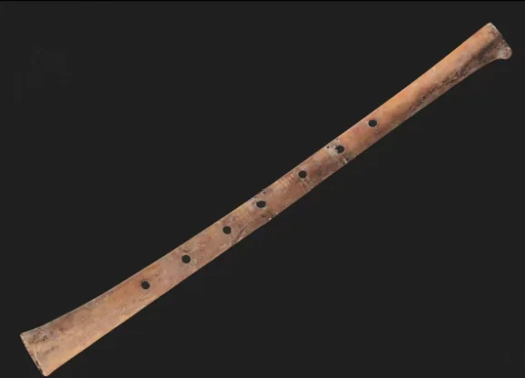
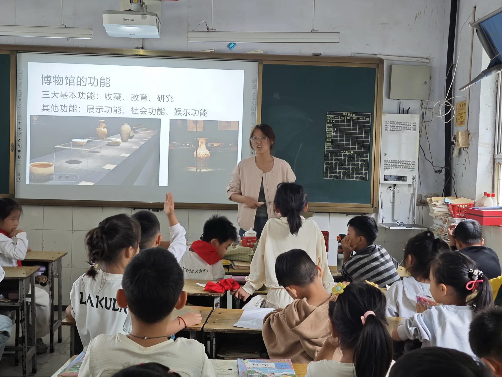
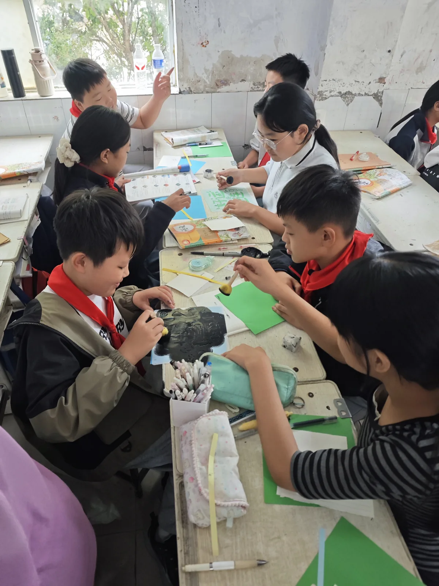
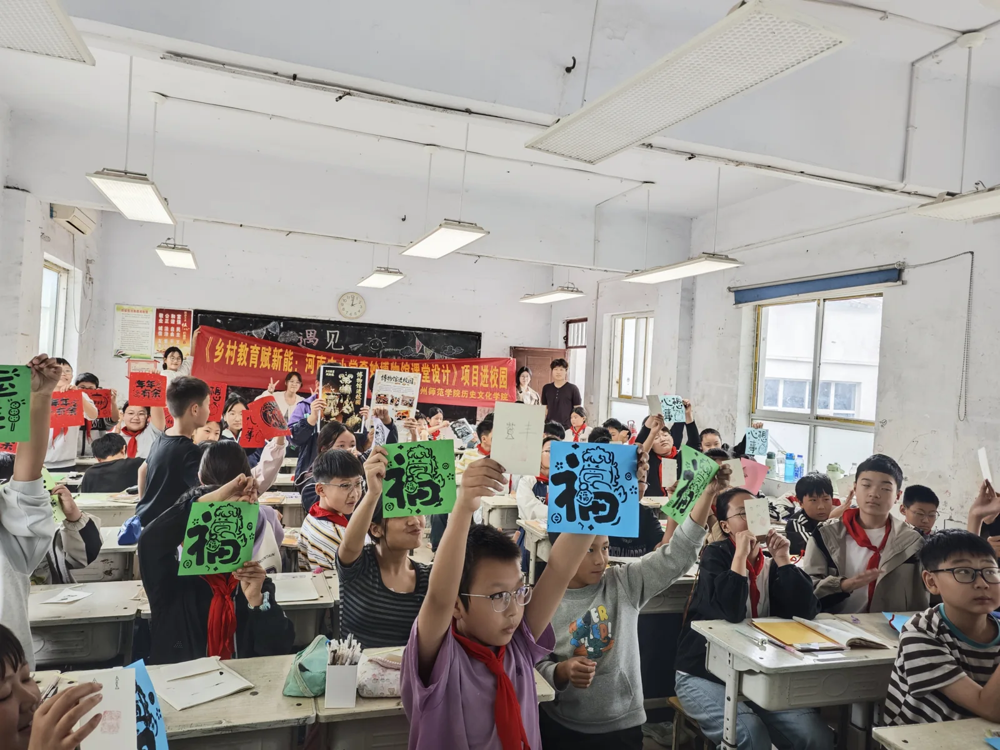
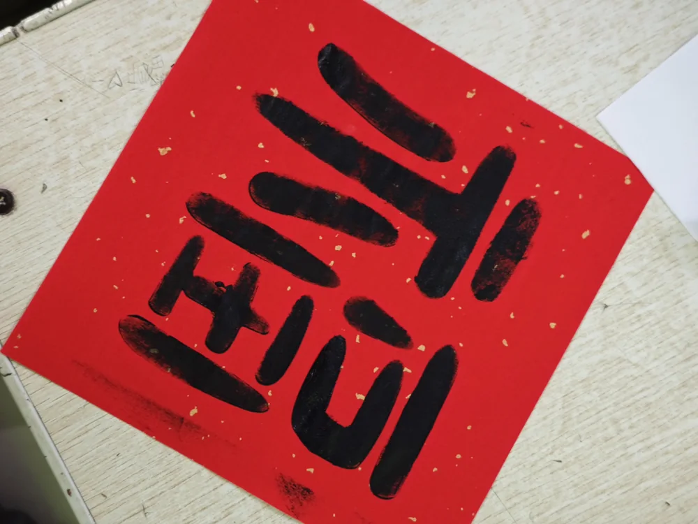

综合类 · 毛志琼
认识河南博物院的藏品
观察贾湖骨笛、云纹铜禁和莲鹤方壶，从外形与用途进入文物的故事。
课堂任务：观察器物 → 了解用途 → 国宝知识问答

以“走进博物馆”为基础导入，沿着器物、遗址、生活与文字，选择一堂感兴趣的课。
选择一个课程主题
主题可分别选用；分龄递进与教学说明仍在完善。
综合类 · 毛志琼
观察贾湖骨笛、云纹铜禁和莲鹤方壶，从外形与用途进入文物的故事。
课堂任务：观察器物 → 了解用途 → 国宝知识问答

2026年5月走进方城、鲁山，10月来到新密。讲解、操作和作品展示，留下了这些课堂记录。

博物馆的功能、文物的用途，成为学生观察和提问的起点。

拓印、黏土与书写，让学生围绕图形、文字和器物参与活动。

作品留住了参与的瞬间；下一步还要记录学生如何解释所学知识。
纸张、纹样与一双双动手的手。选择任意照片，打开原比例大图。
第一批284份，第二批381份。选择批次查看已有统计，各题有效作答人数不同。
四至七年级 · 284份扫描问卷
63.24%
172 / 272名有效作答者
两批对象与题目不同，属于样本描述，不能作为课程前后效果比较。665份为问卷统计份数，不代表活动总人数。
多选题 · 有效作答276人 · 前四项
来源：第一次调查报告第10、14页；V6报告表1。
教师反馈肯定了图片、故事和辨识任务的吸引力，也指出讲解偏快、内容过多。下一轮将按班级基础选课，减少单次内容，并在体验后请学生说明作品对应的文化知识。
三道来自项目课程的互动题。选一个答案，看看背后的解释。
第1题 / 共3题
选好后会显示知识解释。
